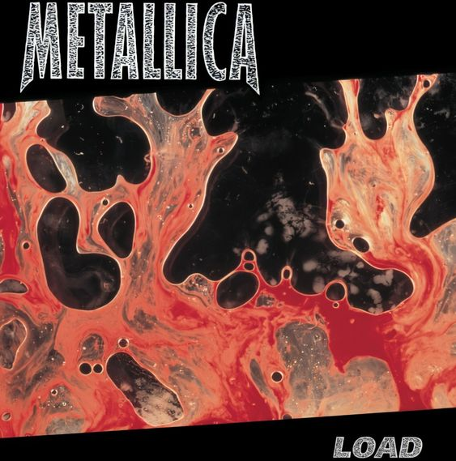

Load
1996
A Load 1996-ban jelent meg, és a Metallica történetének egyik legvitatottabb, ugyanakkor fontos albuma lett. A zenekar a Black Album óriási sikere után új irányba indult: a Load sokkal inkább hard rock, alternatív rock és blues hatásokat hordoz, mint klasszikus thrash metalt. A hangzás letisztultabb és kísérletezőbb lett, a dalok gyakran lassabbak, sötétebb hangulatúak. A lemez olyan számokat tartalmaz, mint a Until It Sleeps, a King Nothing vagy a Hero of the Day, amelyek a ’90-es évek rockrádióinak kedvencei lettek.
A rajongók körében nagy felzúdulást keltett, hogy a zenekar tagjai külsőleg is látványosan megváltoztak: rövid hajjal és alternatív stílusban jelentek meg, ami élesen eltért a korábbi imidzstől. A borító is provokatívra sikerült, Andres Serrano „Blood and Semen III” című művészeti fotójával, amely vér és ondó keverékét ábrázolta.
A felállás továbbra is James Hetfield, Lars Ulrich, Kirk Hammett és Jason Newsted volt, de a zenekaron belül is érződött a változás: a kísérletezés, a bluesos és déli rockos hatások miatt sokan úgy látták, hogy a Metallica távolodik a metal gyökereitől. A lemez azonban így is hatalmas kereskedelmi siker lett, több millió példányban kelt el, és éveken át tartó turné követte.
A Load máig megosztja a rajongókat: egyesek szerint bátor és izgalmas irányváltás volt, mások szerint elárulása annak a thrash metal örökségnek, ami a ’80-as években világhírűvé tette a zenekart. Mindenképpen mérföldkő, amely megmutatta, hogy a Metallica képes újra és újra megújulni – még akkor is, ha ezért sok kritikát kapott.
| Szám | Hossz | Írók |
|---|---|---|
| Ain't My Bitch | 5:04 | Hetfield, Ulrich |
| 2 X 4 | 5:28 | Hetfield, Ulrich, Hammett |
| The House Jack Built | 6:39 | Hetfield, Ulrich, Hammett |
| Until It Sleeps | 4:30 | Hetfield, Ulrich |
| King Nothing | 5:28 | Hetfield, Ulrich, Hammett |
| Hero of the Day | 4:22 | Hetfield, Ulrich, Hammett |
| Bleeding Me | 8:18 | Hetfield, Ulrich, Hammett |
| Cure | 4:54 | Hetfield, Ulrich, Hammett |
| Poor Twisted Me | 4:00 | Hetfield, Ulrich |
| Wasting My Hate | 3:57 | Hetfield, Ulrich, Hammett |
| Mama Said | 5:20 | Hetfield, Ulrich |
| Thorn Within | 5:52 | Hetfield, Ulrich, Hammett |
| Ronnie | 5:17 | Hetfield, Ulrich |
| The Outlaw Torn | 9:49 | Hetfield, Ulrich |